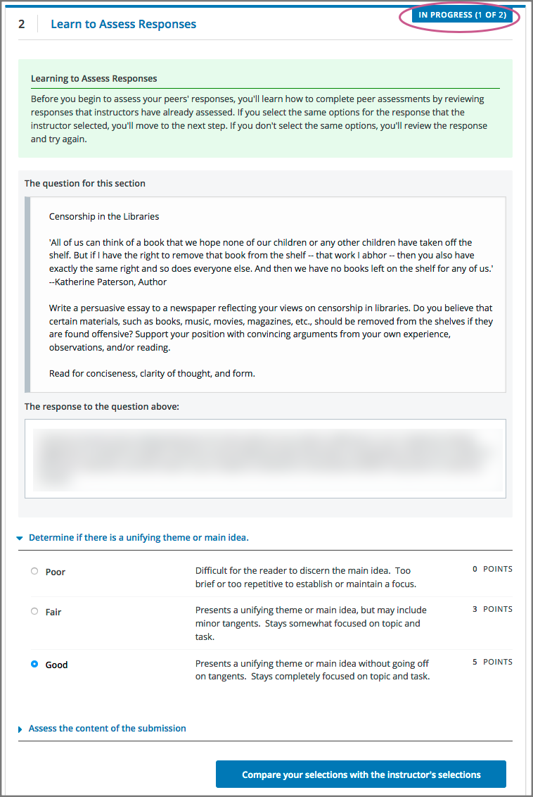
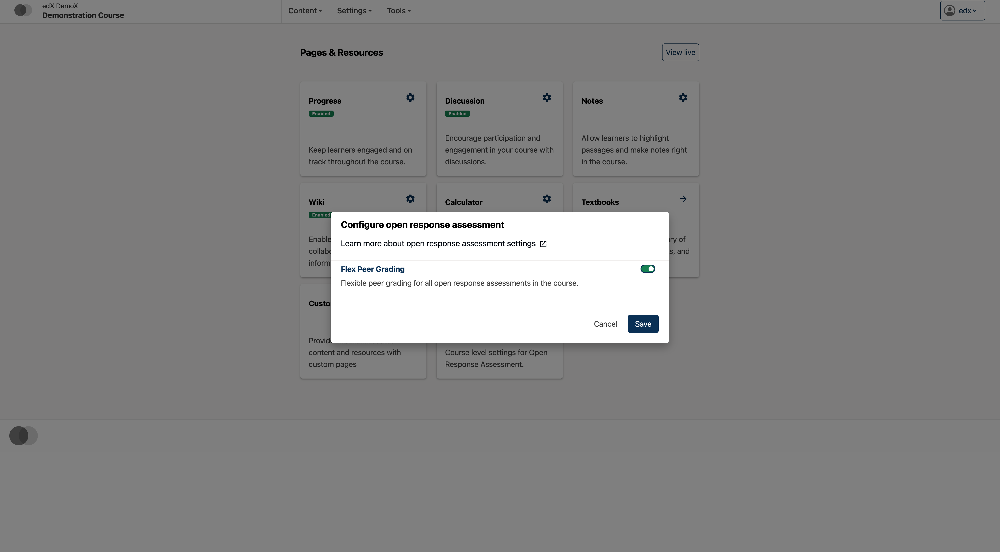
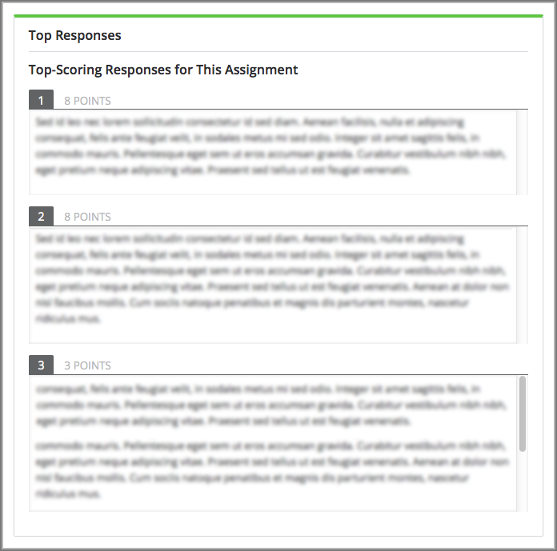

10.26.1. Introduction to Open Response Assessments#
In open response assessments (ORA), learners submit essay responses and then go through a series of assessment steps (such as peer assessment and self assessment) to complete the assignment.
Note
Open response assessments that are visible to all learners do not respect cohorts. In other words, it is possible for learners in one cohort to be asked to grade responses for learners in another cohort. If you want to make an open response assessment divided by cohort, you must create that assessment in a course component that is defined as cohort-specific. For more information about cohorts and creating cohort-specific course content, see Using Cohorts in Your Courses and Creating Cohort-Specific Course Content.
The following topics provide conceptual information about open response assessments.
For information about creating and managing open response assessments, including step by step instructions, see the following sections.
For information about the learner experience with open response assessments, see learners:SFD_ORA in the edX Guide for Learners.
10.26.1.1. Elements of an Open Response Assessment#
When you create an open response assessment assignment, you include several elements.
One or more prompts, or questions, that learners answer.
A rubric. One rubric is used to grade all the prompts in the assessment.
One or more assessment steps. Assignments can include a learner training step, a peer assessment step, a self assessment step, and a staff assessment step.
Note
If you include a learner training step, you must also include a peer assessment step. The learner training step must come first, before the peer and self assessment steps. If you include a staff assessment step, it should be the final step in the assignment.
For step-by-step instructions for creating an open response assessment, see Create an Open Response Assessment Assignment.
10.26.1.1.1. Prompts#
A prompt is the question that you want your learners to answer. You can add more than one prompt in an ORA assignment. In addition to requiring a written response, you can require or allow learners to upload an image or other type of file to accompany their written response.
Within each prompt, you can include helpful information for your learners, such as the approximate number of words or sentences that their responses should have, the types of files that they can upload, or what they can expect after they submit their responses. For more information, see Step 2. Add Prompts.
In the learner view of the assignment, each prompt appears above the field where learners enter their responses. For more information, see learners:Steps in an Open Response Assessment.
10.26.1.1.2. Rubric#
Your assignment must include a rubric. Grading for every type of assessment in an ORA assignment (self, peer, or staff) is done by comparing each response against the same rubric. You add one rubric for each problem, regardless of the number of prompts in the problem. The person performing the assessment sees the rubric when she begins grading, and compares the submitted response to the rubric.
A rubric consists of several criteria and a set of options for each criterion.
Criteria. Each criterion describes characteristics that a response should have. Examples are concepts that a response should cover, or the amount of supporting information that a response must include.
Each criterion has a name and a prompt.
The criterion name is a one or two word summary of the criterion, such as “Content” or “Organization”. This name must be unique within the assignment and cannot be changed after you release the assignment.
The criterion prompt describes how to evaluate a response based on this criterion.
Options. Each criterion has a set of options, usually a range of ratings, which describe how well each response satisfies the criterion. For example a set of options might be “Fair”, “Good”, or “Excellent”.
Each option has a name, an explanation, and a point value.
The option name is a one or two word summary of the rating.
The option explanation consists of details that help the person performing the assessment to decide whether the response matches the rating. Make sure the explanation for each option is as specific as possible.
The option point value is the number of grade points given for this option.
Note
Different criteria in the same assignment can have different numbers of options.
You can also include criteria that do not have options, but that do include a field where learners or staff can enter feedback. For more information, see Provide Only Comment Fields for Individual Criteria.
In a rubric as it appears to a learner, the following elements are visible.
A criterion prompt
The names of the criterion’s options
Descriptions for each option
The point value for each option

Criterion names do not display in the rubric that learners use to perform their assessments, but do appear on the page that shows the learner’s final ORA assignment grade.
For information about creating a rubric, see Step 3. Add the Rubric.
10.26.1.1.2.1. An Example Criterion#
In a rubric, one criterion and its set of options might resemble the following.
Criterion
Name: Origins
Prompt: Does this response explain the origins of the Hundred Years’ War? (5 points possible)
Options
Points |
Name |
Explanation |
|---|---|---|
0 |
Not at all |
This response does not address the origins of the Hundred Years’ War. |
1 |
Dynastic disagreement |
This response alludes to a dynastic disagreement between England and France, but doesn’t reference Edward III of England and Philip VI of France. |
3 |
Edward and Philip |
This response mentions the dynastic disagreement between Edward III and Philip VI, but doesn’t address the role of Salic law. |
5 |
Salic law |
This response explains the way that Salic law contributed to the dynastic disagreement between Edward III and Philip VI, leading to the Hundred Years’ War. |
10.26.1.1.3. Assessment Steps#
In your assignment, you also specify the assessment steps. You can set the assignment to include some combination of the following steps.
Note
If you include a learner training step, you must also include a peer assessment step. The learner training step must come before peer or self assessment steps. If you include both peer and self assessment steps, edX recommends that you place the peer assessment before the self assessment. If you include a staff assessment step, it should be the final step in the assignment.
You can see the type and order of the assessments when you look at the assignment. In the following example, after learners submit their responses, they complete a learner training step (“Learn to Assess Responses”), complete peer assessments on other learners’ responses (“Assess Peers”), and then complete a self assessment (“Assess Your Response”).

10.26.1.1.3.1. Learner Training Step#
Learner training steps teach learners to perform their own assessments. A learner training assessment contains one or more sample responses that you write, together with the scores that you would give the sample responses. Learners review these responses and try to score them the way that you scored them.
Note
If you include a learner training step, you must also include a peer assessment step. The learner training step must come before any peer and self assessment steps.
In a learner training assessment, the Learn to Assess Responses step opens immediately after a learner submits a response. The learner sees one of the sample responses that you created, along with the rubric. The scores that you gave the response do not appear. The learner also sees the number of sample responses that he or she will assess.
{kind=link}
The learner selects an option for each of the assignment’s criteria, and then selects Compare your selections with the instructor’s selections. If all of the learner’s selections match the selections defined by the course team, the next sample response opens automatically.
If any of the learner’s selections differ from those specified by the course team, the learner sees the response again, with a message indicating that his assessment differs from the instructor’s assessment.
The learner continues to try scoring the sample response until his scoring for all criteria matches the scoring defined by the course team.
For more information, see Learner Training.
10.26.1.1.3.2. Peer Assessment Step#
In the peer assessment step, learners review the responses of other learners in the course. For each response, they select an option for each criterion in your rubric based on the response. Learners can also provide text feedback, or comments, on each response.
If you include both peer and self assessment steps, edX recommends that you place the peer assessment before the self assessment.
For information about how peer assessments affect a learner’s assignment grade, see How Scores for Open Response Assessments Are Calculated.
10.26.1.1.3.2.1. Number of Responses and Assessments#
When you include a peer assessment step, you specify the number of responses that each learner must assess (Must Grade) and the number of peer assessments that each response must receive (Graded By) before the step is considered complete.
Note
Because some learners might submit a response without performing any peer assessments, some responses might not receive the required number of assessments. To increase the chance that all responses receive a sufficient number of assessments, you must set the number of responses that learners must assess to be higher than the number of assessments that each response must undergo. For example, if you require each response to receive three assessments, you could require each learner to assess five responses.
If all responses have received assessments, but some learners have not completed the required number of peer assessments, those learners can perform peer assessments on responses that have already been assessed by other learners. The learner who submitted the response sees the additional peer assessments when he sees his score. However, the additional peer assessments do not count toward the score that the response receives.
10.26.1.1.3.2.2. Feedback Options#
By default, in peer assessment steps, learners can provide text feedback for the entire response, using a single comment field below the entire rubric. You can also add a comment field to an individual criterion or to several individual criteria. This comment field can contain up to 1000 characters.
Comment fields for individual criterion appear below the options for the criterion.
For more information, see Step 3. Add the Rubric and Provide Only Comment Fields for Individual Criteria.
10.26.1.1.3.2.3. Assessing Additional Responses#
Learners can assess more than the required number of responses. After a learner completes the peer assessment step, the step “collapses” so that only the Assess Peers heading is visible.
If the learner selects the Assess Peers heading, the step expands again. The learner can then select Continue Assessing Peers to perform additional peer assessments.
10.26.1.1.3.3. Self Assessment Step#
In self assessment steps, the learner sees her own response followed by the rubric. As with peer assessments, the learner evaluates the response using the rubric, selecting an option for each criterion.
If you include both peer and self assessments, edX recommends that you include the peer assessment before the self assessment.
10.26.1.1.3.4. Staff Assessment Step#
In staff assessment steps, a member of the course team performs an evaluation of the learner’s response. Course team members grade the response using the problem’s rubric, in the same way that self and peer assessments are done, and can include comments in their assessment.
Note
If a staff assessment step is included in an assignment, learners do not receive final grades until the staff assessment step has been completed. The scores that you give learners in staff assessment steps override scores from any other assessment type in the assignment, including peer assessments that are completed after the staff assessment.
Including a staff assessment step in an ORA assignment is best for courses with smaller groups of learners. For example, in a course with cohorts, you might create an ORA assignment that has both peer assessment and staff assessment steps, and make it available only to the members of one or more specific cohorts. For the members of the remaining cohorts, you create an ORA assignment that has only the peer assessment step. For details about creating different course experiences for learners in different cohorts, see Creating Cohort-Specific Course Content.
For details about performing grading in staff assessment steps, see Perform Staff Assessments in an ORA Assignment.
10.26.1.2. How Scores for Open Response Assessments Are Calculated#
In open response assessments that contain staff assessments, staff assessments can be performed more than once, and the most recent staff assessment score is equivalent to the assignment’s final score. Peer and self assessment scores are not taken into account, although learners can see scores and comments from all assessments that were performed on their response.
In open response assessments that do not contain staff assessments but do contain both peer assessment and self assessments, only the peer assessment score counts toward the assignment’s final score. The self assessment score is not taken into account. There is no option for weighting the peer and self assessment portions independently.
In open response assessments that include only self assessments, the assignment’s final score is equivalent to the self assessment score.
Note
Given the high level of subjectivity in peer assessments, edX recommends that you make ORA assignments count towards only a small percentage of a course’s final grade.
The following topics detail how the scores for peer assessments and self assessments are calculated.
10.26.1.2.1. Peer Assessment Scoring#
Note
If an open response assessment includes peer and self assessments but not staff assessments, only the peer assessment score counts towards the assignment’s final score. The self assessment score is not taken into account.
Peer assessments are scored by criteria. A number of peer assessors rate a learner’s response by each of the required criteria. The learner’s score for a particular criterion is the median of all scores that each peer assessor gave that criterion. For example, if the Ideas criterion in a peer assessment receives a 10 from one learner, a 7 from a second learner, and an 8 from a third learner, the Ideas criterion’s score is 8.
The learner’s final score on a response is the sum of the median scores from all peer assessors for all of the required criteria.
For example, a response might have received the following scores from peer assessors.
Criterion Name |
Peer 1 |
Peer 2 |
Peer 3 |
Median |
|---|---|---|---|---|
Ideas (out of 10) |
10 |
7 |
8 |
8 |
Content (out of 10) |
7 |
9 |
8 |
8 |
Grammar (out of 5) |
4 |
4 |
5 |
4 |
To calculate the final score for the response, add the median scores that were given for each criterion, as follows.
Ideas median (8/10) + Content median (8/10) + Grammar median (4/5) = final score (20/25)
Note
Remember that final scores are calculated by criteria, not by individual assessor. Therefore, the score for the response is not the median of the scores that each individual peer assessor gave the response.
For information on scores for learner submissions that you have canceled and removed from peer assessment, refer to Remove a Learner’s Response.
10.26.1.2.1.1. Flexible Peer Grade Averaging#
To reduce the change of users getting “stuck” in the waiting step, you can enable this feature to lower the requirements for a grade in the peer assessment step.
When this feature is enabled, seven days after a learner submits, the number of peer reviews required for them to receive a grade decreases to 30% of what it previously was, rounded down to the nearest integer.
For example, let’s say we have an assessment that requires learners to receive ten (10) peer reviews to receive a grade.
Learner A has received five peer reviews. This isn’t enough to receive a grade, but seven days after submitting, Flexible Peer Grading activates and reduces the required peer reviews to 30% of the original ten. Now, Learner A only needs three peer reviews. Since they have received at least that many, they will immediately receive a grade.
Learner B has received only one peer review. This isn’t enough for a grade, and seven days after submitting, Flexible Peer Grading also decreases Learner B’s required peer reviews to three. Learner B then receives a second review. This still isn’t enough. As soon as they receive their third peer review, however, they finally have enough peer reviews and immediately receive a grade.
Note
Fexible Peer Grading will never reduce the number of required peer reviews below 1, but it will bring the number to 1. That means if a learner has not recieved any peer reviews after seven days, the very first peer review they will recieve will be the entirety of their peer grade.
10.26.1.2.1.2. Flexible Peer Grade Averaging Course Override#
There is an additional field at the course level to simplify turning flexible peer averaging on for all ORAs in a course. When set to “ON” all peer graded ORAs in the course will have flexible peer grade averaging enabled, with no need to manually change settings on each individual ORA. When set to “OFF” all peer Graded ORAs in the course will fallback to the setting on each individual assignment. This course field is set to ON by default for course reruns and new courses in order to facilitate students receiving a grade in a timely manner.
You can adjust this setting by going to Pages and Resources, and selecting “ORA Flexible Peer Grading”

Then set the toggle for this feature on or off
{kind=link}
10.26.1.2.2. Self Assessment Scoring#
Note
If an open response assessment includes both peer and self assessments, the self assessment score does not count toward the final grade.
If an open response assessment includes only self assessments, the assignment’s final score is equivalent to the self assessment score.
Self assessments are scored by criteria. Each learner rates herself on each criterion, using the rubric. The learner’s final score on a response is the total number of earned points, out of the total possible points.
10.26.1.2.3. Staff Assessment Scoring#
If an open response assessment includes a staff assessment step, the score that is given in the staff assessment step overrides all other scores in the assignment.
10.26.1.3. Top Responses#
You can include a Top Responses section that shows the top scoring responses that learners have submitted for the assignment, along with the scores for those responses. The Top Responses section appears below the learner’s score information after the learner finishes every step in the assignment.
{kind=link}
You can allow the Top Responses section to show between 1 and 100 responses. Keep in mind, however, that each response might be up to 300 pixels in height in the list. (For longer responses, learners can scroll to see the entire response.) EdX recommends that you specify 20 or fewer responses to prevent the page from becoming too long.
Note
It can take up to an hour for a high-scoring response to appear in the Top Responses list.
If a high-scoring response is removed from peer assessment it is also removed from the Top Responses list.
For more information, see Include Top Responses.
10.26.1.4. Best Practices for Open Response Assessments#
Open response assessments can be a powerful teaching tool, but they are more effective in some situations than in others. In general, open response assessments are best suited to open-ended or project-based assignments with subjective essay answers and discussion. For example, open response assessments work well in humanities assignments where learners are encouraged to make subjective assessments of text, images, or other contributions, but they might not be the ideal tool in chemistry assignments where there are definitively correct or incorrect answers to questions.
Note
Do not add more than one ORA component in a course unit. Multiple ORA assignments in a unit cause errors when learners submit their assessments.
EdX suggests that you follow the guidelines and best practices in the following sections when you use open response assessments in your courses.
10.26.1.4.1. Designing the Assignment#
Do not add more than one ORA component in a course unit. Multiple ORA assignments in a unit cause errors when learners submit their assessments.
Do not include too many ORA assessments in your course. Peer assessments are hard work for learners, and having to perform too many peer assessments can have a negative impact on learners’ course completion rates.
For a manageable experience for course staff, use staff assessment steps only in assignments that are available to a limited number of learners. For example, in courses that have cohorts enabled, make the assignment containing the staff assessment step available only to members of one or more cohorts.
10.26.1.4.2. Grading and Rubrics#
Make sure you have a well designed and clear rubric for the assignment. A good rubric is very important in helping to eliminate ambiguity in the peer grading process.
Make ORA assignments count toward only a small percentage of the final course grade, or make them ungraded.
In graded ORA assignments, consider setting the lowest possible score to a number higher than zero, so that learners can earn some credit for the work they have done, even if their peer assessors give them low grades.
Provide an ungraded practice ORA assignment prior to the first graded ORA assignment in the course, so that learners can understand the peer grading process and get the most out of the eventual graded ORA assignment.
Consider using ungraded ORA assignments to generate learner interaction and feedback without affecting grades.
10.26.1.4.3. Peer Assessments#
Set the Must Grade number higher than the Graded By number to minimize the chance that some responses will not be peer assessed. EdX recommends a setting such as Must Grade = 4 and Graded By = 3.
To allow enough time for peer assessments to be performed after learners have submitted their own responses, set the response due date and time at least one week before the peer assessment due date and time.
If the response due time and peer assessment due time are too close together, and a learner submits a response just before responses are due, other learners may not have time to perform peer assessments before peer assessments are due.
Use course discussion posts to provide guidance for peer grading of ORA assignments.
Consider extending due dates to allow the discussion moderation team to monitor course discussions for questions about, or reactions to, peer grading, and to address issues when necessary.
If learners raise concerns about ORA assignments in course discussions, course team members can perform actions such as deleting a learner’s history, or “state” for a problem so that he can submit his assignment again, overriding a learner’s grade, or removing a learner response from peer grading. If there are more widespread issues with peer grading, the course team can reduce the weight of the peer assessment within the final course grade or allow learners to drop the lowest graded assignment from their grades.
10.26.1.5. Asking Learners to Upload Files in Responses#
In ORA assignments, you can ask your learners to upload images, .pdf files, or other types of files as a part of their responses. Other learners evaluate the responses and their accompanying files during the peer assessment. Offering the option to upload files in addition to a text response can give learners the opportunity to use tools and develop skills that are relevant to your course.
Before you decide to ask learners to upload files along with their text responses, however, be aware of the following limitations and best practices.
During the peer assessment step, learners download the files that other learners uploaded. To reduce the potential for problems from files with malicious content, learners cannot upload files with certain file extensions. For a complete list, see Prohibited File Extensions.
Course teams can only access uploaded files for one learner at a time. Uploaded file content is not included in the reports of answer submissions that are available from the instructor dashboard, and course data packages do not include any of the uploaded files.
The cumulative size of all uploaded files must be less than 500 MB.
Image files must be in .jpg, .gif, or .png format.
For more information, see Specify the Response Type.
10.26.1.5.1. Prohibited File Extensions#
Learners cannot upload file types that have the following file name extensions as part of an open response assessment on edx.org or edX Edge. When you define a set of custom file types for learners to upload with their responses, you cannot specify these file types. The extensions on this list are selected and maintained by the development operations team at edX, and are subject to change.
A through I |
.action, .apk, .app, .application, .bat, .bin, .cmd, .com, .command, .cpl, .csh, .dmg, .exe, .gadget, .hta, .htm, .html, .inf, .ins, .inx, .ipa, .isu |
J through P |
.jar, .job, .jse, .lnk., msc, .msh, .msh1, .msh2, .mshxml, .msh1xml, .msh2xml, .msi, .msp, .mst, .osx, .out, .paf, .pif, .prg, psc1, .psc2, .ps1, .ps1xml, .ps2, .ps2xml |
Q through Z |
.reg, .rgs, .run, .scf, .scr, .sct, .shb, .shs, .u3p, .vb, .vbe, .vbs, .vbscript, .workflow .ws, .wsc, .wsf, .wsh |